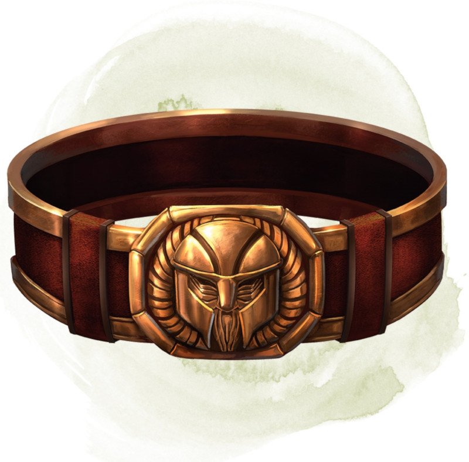

Belt of Dwarvenkind
Wondrous item, rare (requires attunement)
While wearing this belt, you gain the following benefits:
• Your Constitution score increases by 2, to a maximum of 20.
• You have advantage on Charisma (Persuasion) checks made to interact with dwarves.
In addition, while attuned to the belt, you have a 50 percent chance each day at dawn of growing a full beard if you're capable of growing one, or a visibly thicker beard if you already have one.
If you aren't a dwarf, you gain the following additional benefits while wearing the belt:
• You have advantage on saving throws against poison, and you have resistance against poison damage.
• You have darkvision out to a range of 60 feet.
• You can speak, read, and write Dwarvish.
• Your Constitution score increases by 2, to a maximum of 20.
• You have advantage on Charisma (Persuasion) checks made to interact with dwarves.
In addition, while attuned to the belt, you have a 50 percent chance each day at dawn of growing a full beard if you're capable of growing one, or a visibly thicker beard if you already have one.
If you aren't a dwarf, you gain the following additional benefits while wearing the belt:
• You have advantage on saving throws against poison, and you have resistance against poison damage.
• You have darkvision out to a range of 60 feet.
• You can speak, read, and write Dwarvish.
Dungeon Master´s Guide (SRD)
